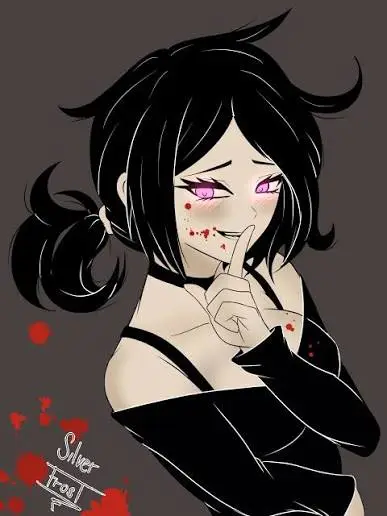

Протагонистка • ЯндереЭшли «Лейли» Грейвс
Эшли — яркая, непредсказуемая и смертоносная протагонистка новеллы. Младшая сестра Эндрю, чей детский никнейм «Лейли» символизирует их глубокую закрытую связь. Обладая очаровательной внешностью и острым черным юмором, она начисто лишена базовой человеческой эмпатии, чувства вины и страха перед социальными нормами.
Психопатология и Характер
Эшли проявляет классические черты антисоциального расстройства личности в сочетании с пограничным расстройством и манией собственничества:
- Отсутствие раскаяния: В то время как Эндрю мучается от чувства вины после каннибализма или убийств, Эшли испытывает лишь облегчение или прагматичное удовлетворение от решённой проблемы.
- Искусный манипулятор: Она идеально чувствует слабости брата и виртуозно играет на его чувстве вины, заставляя его защищать её любой ценой.
- Опасное обаяние: Несмотря на свою чудовищную натуру, Эшли невероятно харизматична, остроумна и находчива, что делает её любимицей игроков по всему миру.
- Склонность к оккультизму: Без малейших колебаний заключает сделки с демоническими сущностями, воспринимая ритуалы крови как простой рабочий инструмент.
Одержимость Эндрю (Яндере-фактор)
Весь психологический мир Эшли вращается вокруг одной единственной оси — её старшего брата. Она не признает никаких дистанций между ними и считает Энди своим исключительным продолжением:
- Уничтожение соперниц: Эшли испытывает открытую неприязнь и ненависть к любой женщине, проявляющей интерес к Энди (включая Джулию и даже их собственную мать).
- Контроль через изоляцию: Карантин и бегство от закона для неё — идеальная среда, ведь в этих условиях Эндрю полностью отрезан от остального человечества и зависит только от неё.
- Психологический вампиризм: Она буквально питается эмоциональной уязвимостью брата, внушая ему, что никто в мире, кроме неё, никогда не поймёт его истинной сути.
Роль в Развилках Эпизода 2
Решения игрока во втором эпизоде определяют, насколько далеко зайдет безумие Эшли:
Жертвоприношение и Предательство
Если Энди пытается бороться и дистанцироваться, Эшли способна проявить крайнюю степень жестокости, превратившись в хладнокровного палача, готового принести брата в жертву ради спасения собственной шкуры.
Тотальный Симбиоз (Гробовая Связь)
Если игрок принимает все требования Эшли, герои окончательно сжигают мосты с моралью. Они образуют закрытый тандем монстров, объединенных общими грехами, кровью и искаженной любовью, не знающей запретов.
Культовые Реплики Эшли
- «Ты принадлежишь мне, Энди. Каждая твоя мысль, каждый твой вдох.»
- «Мясо есть мясо. Какая разница, кем оно было раньше, если мы умираем от голода?»
- «Не смей смотреть на неё так. Ты мой брат. Мой!»
- «Мы сожжем этот проклятый дом, Энди. Мы сожжем всё, что причинило нам боль.»